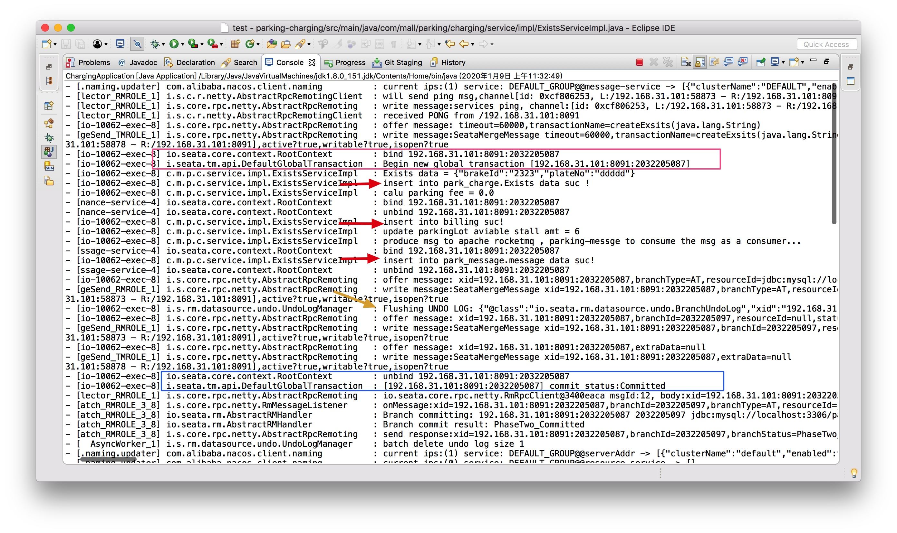
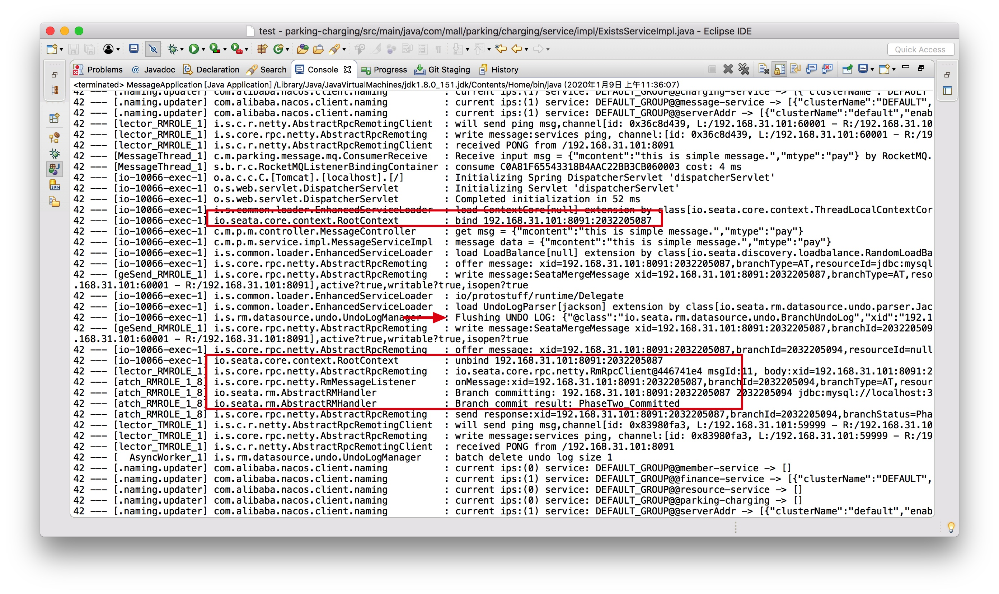

- 00 开篇导读.md.html
- 01 以真实“商场停车”业务切入——需求分析.md.html
- 02 具象业务需求再抽象分解——系统设计.md.html
- 03 第一个 Spring Boot 子服务——会员服务.md.html
- 04 如何维护接口文档供外部调用——在线接口文档管理.md.html
- 05 认识 Spring Cloud 与 Spring Cloud Alibaba 项目.md.html
- 06 服务多不易管理如何破——服务注册与发现.md.html
- 07 如何调用本业务模块外的服务——服务调用.md.html
- 08 服务响应慢或服务不可用怎么办——快速失败与服务降级.md.html
- 09 热更新一样更新服务的参数配置——分布式配置中心.md.html
- 10 如何高效读取计费规则等热数据——分布式缓存.md.html
- 11 多实例下的定时任务如何避免重复执行——分布式定时任务.md.html
- 12 同一套服务如何应对不同终端的需求——服务适配.md.html
- 13 采用消息驱动方式处理扣费通知——集成消息中间件.md.html
- 14 Spring Cloud 与 Dubbo 冲突吗——强强联合.md.html
- 15 破解服务中共性问题的繁琐处理方式——接入 API 网关.md.html
- 16 服务压力大系统响应慢如何破——网关流量控制.md.html
- 17 集成网关后怎么做安全验证——统一鉴权.md.html
- 18 多模块下的接口 API 如何统一管理——聚合 API.md.html
- 19 数据分库后如何确保数据完整性——分布式事务.md.html
- 20 优惠券如何避免超兑——引入分布式锁.md.html
- 21 如何查看各服务的健康状况——系统应用监控.md.html
- 22 如何确定一次完整的请求过程——服务链路跟踪.md.html
- 23 结束语.md.html
19 数据分库后如何确保数据完整性——分布式事务
如果你已经在学习本课程的过程中，将前面所有业务代码填充完整后，会发现某些涉及多服务调用过程中多个数据库写入操作，是存在漏洞的。
通过 @Transactional 注解进行事务控制，服务内尚未保证数据的完整性，跨服务后数据的完整性无法得到保护。这里就涉及到分布式事务的问题，本篇我们一起使用 Seata 组件来进行来确保跨服务场景下的数据完整性问题。
问题场景
先拿一个关键场景来铺垫下主题。车辆交费离场后，主要业务逻辑如下：
- 计费服务自向，写入离场信息
- 调用财务服务，写入收费信息
- 调用消息服务，写入消息记录
涉及到三个服务间协作，数据分别写入三个存储库，是一个典型的分布式事务数据一致性问题。来看下正常场景的代码逻辑：
@Service
@Slf4j
public class ExistsServiceImpl implements ExistsService {
@Autowired
ExistsMapper ExistsMapper;
@Autowired
EntranceMapper entranceMapper;
@Autowired
RedisService redisService;
@Autowired
BillFeignClient billFeignClient;
@Autowired
MessageClient messageClient;
@Autowired
Source source;
@Override
@Transactional(rollbackFor = Exception.class)
public int createExsits(String json) throws BusinessException {
log.info("Exists data = " + json);
Exists exists = JSONObject.parseObject(json, Exists.class);
int rtn = ExistsMapper.insertSelective(exists);
log.info("insert into park_charge.Exists data suc !");
//计算停车费用
EntranceExample entranceExample = new EntranceExample();
entranceExample.setOrderByClause("create_date desc limit 0,1");
entranceExample.createCriteria().andPlateNoEqualTo(exists.getPlateNo());
List<Entrance> entrances = entranceMapper.selectByExample(entranceExample);
Entrance lastEntrance = null;
if (CollectionUtils.isNotEmpty(entrances)) {
lastEntrance = entrances.get(0);
}
if (null == lastEntrance) {
throw new BusinessException("异常车辆，未找到入场数据!");
}
Instant entryTime = lastEntrance.getCreateDate().toInstant();
Duration duration = Duration.between(LocalDateTime.ofInstant(entryTime, ZoneId.systemDefault()),
LocalDateTime.now());
long mintues = duration.toMinutes();
float fee = caluateFee(mintues);
log.info("calu parking fee = " + fee);
//调用 第三方支付服务，支付停车费，这里略去。直接进行支付记录写入操作
Billing billing = new Billing();
billing.setFee(fee);
billing.setDuration(Float.valueOf(mintues));
billing.setPlateNo(exists.getPlateNo());
CommonResult<Integer> createRtn = billFeignClient.create(JSONObject.toJSONString(billing));
if (createRtn.getRespCode() > 0) {
log.info("insert into billing suc!");
}else {
throw new BusinessException("invoke finance service fallback...");
}
//更新场外屏幕，刷新可用车位数量
redisService.increase(ParkingConstant.cache.currentAviableStallAmt);
log.info("update parkingLot aviable stall amt = " +redisService.getkey(ParkingConstant.cache.currentAviableStallAmt));
//发送支付消息
Message message = new Message();
message.setMcontent("this is simple pay message.");
message.setMtype("pay");
source.output().send(MessageBuilder.withPayload(JSONObject.toJSONString(message)).build());
log.info("produce msg to apache rocketmq , parking-messge to consume the msg as a consumer...");
//写入支付消息记录
CommonResult<Integer> msgRtn = messageClient.sendNotice(JSONObject.toJSONString(message));
if (msgRtn.getRespCode() > 0) {
log.info("insert into park_message.message data suc!");
}else {
throw new BusinessException("invoke message service fallback ...");
}
return rtn;
}
/**
* @param stayMintues
* @return
*/
private float caluateFee(long stayMintues) {
String ruleStr = (String) redisService.getkey(ParkingConstant.cache.chargingRule);
JSONArray array = JSONObject.parseArray(ruleStr);
List<ChargingRule> rules = JSONObject.parseArray(array.toJSONString(), ChargingRule.class);
float fee = 0;
for (ChargingRule chargingRule : rules) {
if (chargingRule.getStart() <= stayMintues && chargingRule.getEnd() > stayMintues) {
fee = chargingRule.getFee();
break;
}
}
return fee;
}
}
正常情况下，不会出现问题，一旦子服务出现写入异常逻辑，就会出现数据不一致的情况。比如车辆离场记录写入成功，但支付记录写入失败的情况，代码不能及时回滚错误数据，造成业务数据的不完整，事后追溯困难。
分布式事务问题
什么是事务，事务是由一组操作构成的可靠的独立的工作单位，要么全部成功，要么全部失败，不能出现部分成功部分失败的情况。在单体架构下，更多的是本地事务，比如采用 Spring 框架的话，基本上是由 Spring 来管理着事务，保证事务的正常逻辑。但本地事务仅限于当前应用，其它应用的事务就鞭长莫及了。
什么是分布式事务，一次大的业务操作中涉及众多小操作，各个小操作分散在不同的应用中，要保证业务数据的完整可靠。同样也是要么全成功，要么全失败。事务管理的范围由单一应用演变成分布式系统的范围。
网络中针对分布式事务的讨论很多，成熟方案也存在，这里不引入过多讨论，由兴趣的小伙伴可以先补充下这块的知识，再来回看本篇内容。
在数据强一致要求不高的情况下，业界普遍主张采用最终一致性，来保证分布式事务涉及到的数据完整性。本文即将重点介绍的 Seata 方案属于此类。
Seata 是什么
Seata 是一款开源的分布式事务解决方案，致力于在微服务架构下提供高性能和简单易用的分布式事务服务。支持 Dubbo、Spring Cloud、grpc 等 RPC 框架，本次引入也正是与 Spring Cloud 体系融合比较好的原因。更多详细内容可参照其官网：
Seata 中有三个重要概念：
- TC——事务协调者：维护全局和分支事务的状态，驱动全局事务提交或回滚，独立于各应用之外。
- TM——事务管理器：定义全局事务的范围：开始全局事务、提交或回滚全局事务，也就是事务的发起方。
- RM——资源管理器：管理分支事务处理的资源，与 TC 交谈以注册分支事务和报告分支事务的状态，并驱动分支事务提交或回滚，RM 自当是维护在各个微服务中。
（图片来源于 https://github.com/seata/seata）
Seata Server 安装
本案例基于 AT 模块展开，需要结合 MySQL、Nacos 共同完成。
下载完成后，进入 seata 目录：
drwxr-xr-x 3 apple staff 96 10 16 15:38 META-INF/
-rw-r--r-- 1 apple staff 1439 10 16 15:38 db_store.sql
[email protected] 1 apple staff 829 12 18 11:40 db_undo_log.sql
-rw-r--r-- 1 apple staff 3484 12 19 09:41 file.conf
-rw-r--r-- 1 apple staff 2144 10 16 15:38 logback.xml
-rw-r--r-- 1 apple staff 892 10 16 15:38 nacos-config.py
-rw-r--r-- 1 apple staff 678 10 16 15:38 nacos-config.sh
-rw-r--r-- 1 apple staff 2275 10 16 15:38 nacos-config.txt
-rw-r--r-- 1 apple staff 1359 12 19 09:41 registry.conf
事务注册支持 file、nacos、eureka、redis、zk、consul、etcd3、sofa 多种模式，配置也支持 file、nacos、apollo、zk、consul、etcd3 等多种模式，本次使用 nacos 模式，修改 registry.conf 后如下。
appledeMacBook-Air:conf apple$ cat registry.conf
registry {
# file、nacos、eureka、redis、zk、consul、etcd3、sofa
type = "nacos"
nacos {
serverAddr = "localhost:8848"
namespace = ""
cluster = "default"
}
}
config {
# file、nacos、apollo、zk、consul、etcd3
type = "nacos"
nacos {
serverAddr = "localhost"
namespace = ""
cluster = "default"
}
}
事务注册选用 nacos 后，就需要用到 nacos-config.txt 配置文件，打开文件修改关键配置项——事务组及存储配置项：
service.vgroup_mapping.${your-service-gruop}=default
中间的 ${your-service-gruop} 为自己定义的服务组名称，服务中的 application.properties 文件里配置服务组名称。有多少个子服务中涉及全局事务控制，就要配置多少个。
service.vgroup_mapping.message-service-group=default
service.vgroup_mapping.finance-service-group=default
service.vgroup_mapping.charging-service-group=default
...
store.mode=db
store.db.url=jdbc:mysql://127.0.0.1:3306/seata-server?useUnicode=true
store.db.user=root
store.db.password=root
初始化 seata-server 数据库，涉及三张表：branch_table、global_table 和 lock_table，用于存储全局事务、分支事务及锁定表相关数据，脚本位于 conf 目录下 db_store.sql 文件中。
SET NAMES utf8mb4;
SET FOREIGN_KEY_CHECKS = 0;
-- ----------------------------
-- Table structure for branch_table
-- ----------------------------
DROP TABLE IF EXISTS `branch_table`;
CREATE TABLE `branch_table` (
`branch_id` bigint(20) NOT NULL,
`xid` varchar(128) NOT NULL,
`transaction_id` bigint(20) DEFAULT NULL,
`resource_group_id` varchar(32) DEFAULT NULL,
`resource_id` varchar(256) DEFAULT NULL,
`lock_key` varchar(128) DEFAULT NULL,
`branch_type` varchar(8) DEFAULT NULL,
`status` tinyint(4) DEFAULT NULL,
`client_id` varchar(64) DEFAULT NULL,
`application_data` varchar(2000) DEFAULT NULL,
`gmt_create` datetime DEFAULT NULL,
`gmt_modified` datetime DEFAULT NULL,
PRIMARY KEY (`branch_id`),
KEY `idx_xid` (`xid`)
) ENGINE=InnoDB DEFAULT CHARSET=utf8;
-- ----------------------------
-- Table structure for global_table
-- ----------------------------
DROP TABLE IF EXISTS `global_table`;
CREATE TABLE `global_table` (
`xid` varchar(128) NOT NULL,
`transaction_id` bigint(20) DEFAULT NULL,
`status` tinyint(4) NOT NULL,
`application_id` varchar(32) DEFAULT NULL,
`transaction_service_group` varchar(32) DEFAULT NULL,
`transaction_name` varchar(128) DEFAULT NULL,
`timeout` int(11) DEFAULT NULL,
`begin_time` bigint(20) DEFAULT NULL,
`application_data` varchar(2000) DEFAULT NULL,
`gmt_create` datetime DEFAULT NULL,
`gmt_modified` datetime DEFAULT NULL,
PRIMARY KEY (`xid`),
KEY `idx_gmt_modified_status` (`gmt_modified`,`status`),
KEY `idx_transaction_id` (`transaction_id`)
) ENGINE=InnoDB DEFAULT CHARSET=utf8;
-- ----------------------------
-- Table structure for lock_table
-- ----------------------------
DROP TABLE IF EXISTS `lock_table`;
CREATE TABLE `lock_table` (
`row_key` varchar(128) NOT NULL,
`xid` varchar(96) DEFAULT NULL,
`transaction_id` mediumtext,
`branch_id` mediumtext,
`resource_id` varchar(256) DEFAULT NULL,
`table_name` varchar(32) DEFAULT NULL,
`pk` varchar(36) DEFAULT NULL,
`gmt_create` datetime DEFAULT NULL,
`gmt_modified` datetime DEFAULT NULL,
PRIMARY KEY (`row_key`)
) ENGINE=InnoDB DEFAULT CHARSET=utf8;
SET FOREIGN_KEY_CHECKS = 1;
表结构初始化完成后，就可以启动 seata-server：
#192.168.31.101 为本机局域网 ip
# 初始化 seata 的 nacos 配置
cd seata/conf
sh nacos-config.sh 192.168.31.101
# 启动 seata-server，为必须端口冲突，此处调整为 8091
cd seata/bin
nohup sh seata-server.sh -h 192.168.31.101 -p 8091 -m db &
服务中 Seata 配置
每个独立的业务库，都需要 undo_log 数据表的支持，以便发生异常时回滚。分别在会员库，财务库和消息库三个库中分别执行如下脚本，写入 un_log 表。
CREATE TABLE `undo_log`
(
`id` BIGINT(20) NOT NULL AUTO_INCREMENT,
`branch_id` BIGINT(20) NOT NULL,
`xid` VARCHAR(100) NOT NULL,
`context` VARCHAR(128) NOT NULL,
`rollback_info` LONGBLOB NOT NULL,
`log_status` INT(11) NOT NULL,
`log_created` DATETIME NOT NULL,
`log_modified` DATETIME NOT NULL,
`ext` VARCHAR(100) DEFAULT NULL,
PRIMARY KEY (`id`),
UNIQUE KEY `ux_undo_log` (`xid`, `branch_id`)
) ENGINE = InnoDB
AUTO_INCREMENT = 1
DEFAULT CHARSET = utf8;
在各模块服务的 pom.xml 文件中增加 seata 相关 jar 支持：
<!-- seata-->
<dependency>
<groupId>com.alibaba.cloud</groupId>
<artifactId>spring-cloud-alibaba-seata</artifactId>
</dependency>
<dependency>
<groupId>io.seata</groupId>
<artifactId>seata-all</artifactId>
</dependency>
jar 包引入后，对应模块服务的 application.properties 中增加 seata 相关的配置项：
# 要与服务端 nacos-config.txt 配置文件中 service.vgroup_mapping 的后缀对应
spring.cloud.alibaba.seata.tx-service-group=message-service-group
#spring.cloud.alibaba.seata.tx-service-group=finance-service-group
#spring.cloud.alibaba.seata.tx-service-group=charging-service-group
logging.level.io.seata = debug
#macbook pro 的配置较低，server 时应适当减少时间配置
#hystrix 超过指定时间后，会自动进行 fallback 处理
hystrix.command.default.execution.isolation.thread.timeoutInMilliseconds=20000
feign.client.config.defalut.connectTimeout=5000
#feign 是通过 ribbon 完成客户端负载均衡，这里要配置 ribbon 的连接超时时间，若超时自动 fallback
ribbon.ConnectTimeout=6000
application.properties 同级目录下，依据 Spring Boot 约定优于配置的原则，增加 registry.conf 文件，应用启动时会默认加载此文件，代码中已写有默认文件名，如下图：
数据源代理配置
若要全局事务生效，针对每个微服务对应的存储库，必须由 Seata 进行数据源代理，以便统一管理，配置代码如下，将下列代码文件写入所有相关的微服务模块中，服务启动时自动配置。
@Configuration
public class DataSourceProxyConfig {
@Value("${mybatis.mapper-locations}")
private String mapperLocations;
@Bean
@ConfigurationProperties(prefix = "spring.datasource")
public DataSource hikariDataSource(){
//spring boot 默认集成的是 Hikari 数据源，如果想更改成 driud 的方式，可以在 spring.datasource.type 中指定
return new HikariDataSource();
}
@Bean
public DataSourceProxy dataSourceProxy(DataSource dataSource) {
return new DataSourceProxy(dataSource);
}
@Bean
public SqlSessionFactory sqlSessionFactoryBean(DataSourceProxy dataSourceProxy) throws Exception {
SqlSessionFactoryBean sqlSessionFactoryBean = new SqlSessionFactoryBean();
sqlSessionFactoryBean.setDataSource(dataSourceProxy);
sqlSessionFactoryBean.setMapperLocations(new PathMatchingResourcePatternResolver()
.getResources(mapperLocations));
sqlSessionFactoryBean.setTransactionFactory(new SpringManagedTransactionFactory());
return sqlSessionFactoryBean.getObject();
}
}
还记得本章节文首的主要业务逻辑代码吗？方法除局部事务注解 @Transactional 外，还需要增加 Seata 全局事务配置注解：
@Transactional(rollbackFor = Exception.class)
@GlobalTransactional
public int createExsits(String json) throws BusinessException { }
至此，Seata Server、全局事务配置、事务回滚配置、数据源代理、代码支持等均已完成，下面我们来启动应用，看看有什么不同：
2020-01-09 09:22:19.179 INFO 16457 --- [ main] com.zaxxer.hikari.HikariDataSource : HikariPool-1 - Starting...
2020-01-09 09:22:19.970 INFO 16457 --- [ main] com.zaxxer.hikari.HikariDataSource : HikariPool-1 - Start completed.
2020-01-09 09:22:20.053 INFO 16457 --- [ main] io.seata.core.rpc.netty.RmRpcClient : register to RM resourceId:jdbc:mysql://localhost:3306/park_charge
2020-01-09 09:22:20.053 INFO 16457 --- [ main] io.seata.core.rpc.netty.RmRpcClient : register resource, resourceId:jdbc:mysql://localhost:3306/park_charge
2020-01-09 09:22:20.060 DEBUG 16457 --- [lector_RMROLE_1] i.s.core.rpc.netty.AbstractRpcRemoting : [email protected] msgId:2, future :[email protected], body:version=0.9.0,extraData=null,identified=true,resultCode=null,msg=null
从第 3 行日志开始，可以看到相应的应用已将自己交由全局事务管控。
哪到底这个分布式事务到底有没有真正有用呢？下面我们一起做个测试，看数据的完整性能否得到保证。
分布式事务测试
异常情况测试
只启动 parking-charge 计费服务，其它两个服务（财务子服务和消息子服务）不启动，当调用 finance-service 时，服务不可用，hystrix 会直接快速失败，抛出异常，此时全局事务失败，刚才成功写入的出场记录被回滚清除，看以下关键日志输出的截图：
正常情况测试
将三个微服务实例全部启动，可以在 nacos 控制台看到三个正常的服务实例，通过 swagger-ui 或 PostMan 发起请求调用，特别关注下三个子服务的控制台输出情况：

parkging-charging 计费服务实例，作为业务发起方，开启全局事务，此时显示全局事务编号是 192.168.31.101:8091:2032205087，被调用方事务编号应该当是一样的。
parking-finance 财务子服务控制台日志输出，可以看到服务正常执行，全局事务编号为 192.168.31.101:8091:2032205087。

parking-message 消息子服务的控制台日志输出情况，全局事务编号与上两个服务保持一致。
经过上面两个一正一反的测试，可以看到分布式事务配置已然正常运行。
细心的朋友发现了，seata 的支持表中都没有数据存在，这是怎么回事呢？什么时候会有数据呢，大家思考一下，算是给大家留的下一个思考题目。